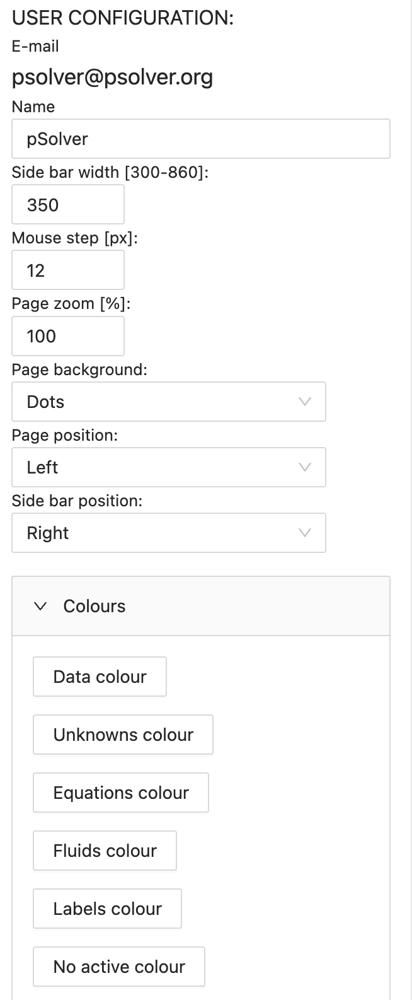

pSolver
pSolver
User Manual
Updated to version 4.47
Index
- Introduction
- User accounts
- Problem list
- Problem screen
- Problem components
- Problem solving
- Sections
- Solving a problem multiple times
- Numerical solution of differential/integral equations
- Mathematical expressions
- Self-correction
- Activities
Introduction
pSolver is an application designed to facilitate the resolution of numerical problems that usually arise in technical disciplines related to engineering.
Each of the problems handled by the application must contain the basic components needed to solve it. These components are:
- Data
- Unknowns
- Equations
The application is able to solve a system of nonlinear equations, finding the values of the unknowns that satisfy these equations.
To add complementary information and anything else we want to include in the problem, we have two more components:
- Texts
- Images
The physical properties of the most common fluids and those of humid air (psychrometry) can be obtained with two components added to the application for this purpose:
- Fluids
- Humid Airs
In order to be able to analyze the results obtained by varying some of the input data, the application has two components called:
- Tables
- Graphs
All these components, which the user can create, move, edit, delete and copy/paste, help to solve the problem in an orderly fashion. In this way, the student can focus on the proper approach to the problem, without having to spend time and effort on mathematical resolution or searching for fluid properties in tables.
The application can be run in any latest generation browser by accessing the address http://psolver.org.
It is recommended to use Chrome, Safari or Microsoft Edge. With Firefox it is not allowed to use the system clipboard to copy and paste components, we can enable it by following the steps below:
- Type "about:config" in the Firefox navigation bar.
- Accept the "Accept risk and continue" message.
- Search for "dom.events.testing.asyncClipboard" and set it to "true".
Problems are automatically stored in an on-line database (Google Firebase).
User accounts
When we access the application for the first time, the following page appears, where we can choose the language with the drop-down menu in the upper left zone.

By clicking on the buttons that appear we can perform the following actions:
- Login: Log in with our already registered user.
- Sign up: Allows to create a user account for the use of the application.
If we click on the sign up button, the following registration dialog will appear:

After filling in the fields with our data, the following informative message will be displayed:

To finish the registration process we must access our email, where we will receive a message with a link to verify our account, please note that sometimes the mail is classified as spam. Once this is done we will be able to log in with our email and password.
The login dialog is shown in the following image, and allows us, if we have forgotten the password, to sent an email to set a new password.

The next time we access the application with the same computer and browser we will access directly without having to enter the user and password again. If we do not want this to happen, which is highly recommended if the computer is not ours, we must close the session before finishing.
The application allows you to make a problem without having any user by pressing the "Blank problem" button that appears in the startup window. We will be able to work normally with the problem but nothing will be saved in the database. If we use the "Problem with known ID" button, it will ask us for the ID (it is an identifying number of the problem that we will see later on how to obtain) of an existing problem and will allow us to work with it, but as before, it will not save any of the modifications that we make. It is also possible to work without a registered user by loading a problem from a local file (stored on the user's computer).
In the case of working on a problem without being logged as a user we will find in the upper right part of the button bar the button which allows us to save the current problem to the local disk (json format is used).
When we create a new account the user type will be "Standard (student)" with a maximum number of 50 problems. If you want to change your user type to "Teacher" or to increase the maximum number of problems, you have to write an email to psolver@psolver.org requesting it.
Problem list
After logging into our account we are shown the following screen where we can see our problem list.

This screen is where the user's problems are managed. We can create a new problem using button.
For each of the problems, a check box is shown on the left to select it and on the right icon allows you to load the problem to work with. If we select a problem using the check we can delete or duplicate it using the icons above the list.
The list of problems can be sorted according to different criteria (Date modified, category or name) using the drop-down list. The category of each problem is displayed as a different coloured label.
The "Filter" drop-down menu allows you to filter by category, so that only the problems of the categories selected by the user will be shown in the list, or to make a filter according to the type of problems: regular, statement, solutions or activity (see section "Activities").
The other buttons have the following functions:
- : Log out user.
- : Courses and activities: Requests the ID of a course to be able to register in it or the ID of a task to create an activity (see section “Activities”).
- : Copy problem: Requests the ID of a problem and makes a copy of it in our account. Allowing to copy problems between different users.
- : Download selected problems to a file: Backs up selected problems to a file (json format is used).
- : Import problems from file: Upload the problem(s) from a local file to your account.
- : Edit categories: Allows you to modify the name and/or colour of existing categories.
Problem screen
When we click on the arrow button on a specific problem we enter the problem screen.
The problem screen consists of 3 main zones:
- The button bar in the upper area.
- The central area, which represents our problem on paper, is where the different components created by the user will be placed.
- A right side bar for editing components. Its content will change depending on the selected component.

To change user configuration we can use the button . The parameters we can modify are shown in the configuration sidebar and will be saved for each user. This parameter includes: user name, the width of the sidebar, its position, the zoom of the page and its position, we can modify the "Mouse step" in pixels that allows us to move the components in jumps of that size, facilitating their positioning and alignment. We can also change the white background of the page to a grid or dotted background. Finally, we can change the colour of the text used for the different components: data, unknowns, etc. components: data, unknowns, equations, properties of fluids or humid air, the labels of the images, tables and graphs, and the "non-active" components.
In the upper area, outside the paper, we can see the name of the problem, its category and its description. If we click on the name it will appear in the editing sidebar the general problem properties, as shown in the following figure:

Using this bar we can change the name, description, category and page size/orientation of the pages. With the "private" check we block the problem, so that the problem cannot be seen or copied by others.
If we want to create a new type of category we must do it using the drop-down menu "Create new category", where we can choose a name and colour of the category and then click on the "Add" button.

In the drop-down menu "Numerical format" we can modify the number of significant figures to be used in this problem, by default value is 4. Also configurable are the value below which it will be rounded to zero, and the minimum and maximum values to change the notation from decimal (the point is used as decimal separator) to exponential or scientific notation.

We can also see the dates of creation and last modification of the problem and the problem ID. The ID is a combination of letters and numbers that uniquely identifies the problem and which can be copied to send the problem to another user. The e-mail of the original author of the problem corresponds to the user who created the problem. This e-mail will be kept when we make copies of the problem.
In addition to the user configuration button we can see the "New" drop-down menu that allows us to create each of the different components of a problem (details in the next section). Next we find the buttons for editing the components of the problem:
- Delete: Deletes the selected component(s).
- Activate/deactivate: Activates or deactivates the selected components.
- Send to the back: When two components occupy the same space on the sheet, we can send the selected component to the background.
- Cut: Remove and saves the currently selected components to the clipboard so that they can be pasted later. They can be pasted into the same problem or into another problem.
- Copy: Saves the currently selected components to the clipboard so that they can be pasted later. They can be pasted into the same problem or into another problem.
- Paste: Paste the components previously stored in the clipboard into the problem, the user must click on the new place where he/she wants to paste the components.
- Replace symbol: Replace a symbol with other entered by the user, searching all components of the problem.
- Search for unknowns: Review the equations and create the new unknowns found in them.
- Tabular view: Displays several lists of the main components (data, unknowns, equations, fluids and humid airs) in tabular format.
Finally, we can find the buttons related to the resolution and management of the problem:
- Solve: Solve the problem by calculating the unknowns.
- Results to initial values: It takes as initial values for the resolution the results currently calculated. This option, as we will see later on, is very interesting when problems of convergence arise in the resolution of the problem.
- Self-correction: This option allows us to correct our problem by comparing it with another problem that should be correct. You can find a section on the subject below.
- Print: Print problem.
The final area on the right hand side of the button bar contains the icon , when we leave the mouse over it we can see the name of the registered user, and on the left side the button to return to the problem list or the initial registration screen.
You can select multiple components by holding down ctrl (cmd on MacOS) and apply the action to all components. You can also select multiple components by clicking and dragging the mouse while holding down the ctrl key (cmd on MacOS), a box with a dashed border will appear.
Problem components
Text: This component allows us to insert a text box. Texts can be formatted using "Markdown". This link briefly describes what Markdown is and how to use it. In the following link you can see an example with all the formatting possibilities that Markdown offers within pSolver: Problem with Markdown text examples.

If we add a variable name between ??, for example ?? x_1 ?? will be replaced by its value if this variable corresponds to a Data, an Unknown, a Fluid or a Humid air. So, for example, if x_1 is a data worth 2.34 m/s, the text will print “2.34 m/s”. For the data it will always include the value and the unit without changing the unit, and for the unknowns it will include the value and the unit already changed, if this change exists.
In the case that we want to force a data or an unknown the unit to be used, we must add the desired unit between square brackets. For example: ?? T_1 [K] ?? will look for the value of T_1 in K whenever this unit is the original or the modified unit.
We can add text boxes or drop-down lists using references to a previously created “Question” component. To do this we must write the symbol of the question component between @@, for example @@ q_1 @@ will be replaced by a text box or a drop-down list (depending on the type of question), which can be filled in by the student. The purpose of this use of questions is to create activities with questions for the students to fill in.
Data: This component is used to enter the known data at the beginning of the problem. The data symbol is the mathematical name of the data and is formatted using AsciiMath as are the equations, fluid properties and unknowns. A brief description of how to use this mathematical format is given in the section Mathematical expressions. The data value can be a number, an expression with numbers, an expression containing other previous data or questions, or a text string if enclosed in inverted commas, e.g. "Water". This type of string data can be used for fluids as we will see later.
The "Active" option that appears in many components may not be selected, and in that case the program would not take that component into account when solving the problem. As we will see, deactivating a component so that the application does not use it in its resolution process can help to perform an orderly resolution of the problem and thus improve the convergence of the resolution.
The "Border" option places a border line around the component. check box locks the component, preventing it from being modified or deleted. Locked components can only be repositioned.
We can change the unit of the data by using the "Change unit" drop-down where we enter the final unit and the mathematical expression to perform the unit change (the data in this expression will always be called "x"). Finally, the bottom button allows us to convert the data into an unknown.

Unknown: This component is used to create the unknowns of our problem whose value will be obtained by the application when solving a set of equations. The unknowns may be automatically created by the application if we use the "find unknowns" button in the toolbar.
If, once the result has been obtained, we want to change the unit of the unknown, we can do this using the drop-down menu "Change of unit" where we introduce the final unit and the mathematical expression to make the unit change (the unknown in this expression will always be called "y").
The "Convergence parameters" drop-down will be discussed later in the section on convergence of results. We can also find a button to convert the unknown to a data.

Equation: This is the component with which the user can define the equations of his problems. The equations must be written in AsciiMath format and must contain a single equal sign "=". In the section "Mathematical expressions" you can find a summary of how the expressions present in the application are evaluated.

Images: Component that allows the insertion of images that are accessible on the internet. The size of the images is controlled by the "Width" property which defines the % of the page width that the image should occupy.
The three options for inserting images are chosen in the "Type" property:
- URL address: For this option in the "link" we must include the URL address where the image we want to show is located. We recommend using the application postimages.org to store images for free and without registration.
- Google Drive: If the image is in our Google Drive we must share it and put the option " Anyone with the link can see the image". Copy the link provided by Google Drive and paste it into the "link" field.
- Dropbox: In the case of having the image stored in Dropbox, from Dropbox we create a link so that "Anyone who has the link can see the file". We copy the link provided by Dropbox and paste it into the "link" property.

Fluids: Este componente permite obtener las propiedades físicas de muchos fluidos a través del uso de la librería Coolprop. Para obtener una propiedad es necesario definir un símbolo, seleccionar el fluido y facilitar el valor de dos propiedades físicas del mismo. Estos valores pueden ser números, datos, incógnitas o expresiones matemáticas que combinen los componentes anteriores. FLuid: This component allows the physical properties of many fluids to be obtained through the use of the Coolprop library. To obtain a property, it is necessary to define a symbol, select the fluid and provide the value of two of its physical properties. These values can be numbers, data, unknowns or mathematical expressions that combine the above components.
In the list of available fluids will appear all the fluids provided by the Coolprop library plus all the string data that exist in the problem, for example if we have a data f = "Water", f will appear at the end of the list. Thus changing the value of the data we will change the fluid used automatically, if we use string data we can use as fluid name, in addition to the ones listed in the dropdown, the names used by Coolprop for fluids and incompressible fluids.

Humid air: This component makes it possible to obtain the psychrometric properties of humid air, for which it also uses the Coolprop library. In this case the properties to be supplied are three instead of two. We can apply a unit change to both fluids and humid air, providing the final unit and the expression as a function of "x".

Tables: Tables are components that allow the problem to be solved several times by changing the data value for each row of the table. Tables are discussed in more detail in the section "Solving the problem multiple times".
Graphs: Graphs allow you to represent using line graphs the values obtained with the tables. We will see them in more detail in the section "Solving the problem multiple times".
Sections: This component allows the problem to be divided into independent parts (sections) as if it were different subproblems. In this way, we can change the value of the data and the unknowns using the same symbols in different sections of the same problem. It will be explained in more detail in the section "Sections".
Questions: This component allows questions to be added to the problem. Questions can only be created by “Teacher” type users. Questions define text boxes or drop-down lists that can later be included in the “Text” components as fillable questions by the student.
Quick edit
For texts, data, unknowns and equations you can use the quick (in situ) editing of the component. Double-clicking or pressing "Enter" on a selected component activates the in-place editing of the component. It consists of a text box just below the component that the user can edit by pressing "Enter" or "Escape" to finish the editing.
In the case of data, as we can see in the following image, the symbol, an equal, the value or expression of the data and the units between brackets are shown. The user can modify any of the three fields and press Enter to finish. In the case of Text, to exit the edition process, press Escape, since Enter is used to enter a new line in the text.

Tabular view
Using button we access the tabular view of the problem.

This screen will display a list of the data, unknowns, equations, fluids or humid airs present in our problem, depending on what is selected in the drop-down list on the top left.
This option is designed to be able to check carefully all the components of our problem. If any component has an error, the first field will appear in red. Within this screen we can only delete the component by clicking on the word "Delete" in the Action column or edit the component by clicking on its row (the editing sidebar is the same as the one in the main screen).
Problem solving
To solve the problem, click on the "solve" button , the application checks if the number of equations is equal to the number of unknowns. Sometimes it is not able to obtain a solution and displays a message similar to the following:

For example, if we try to solve the equation ln(0.5 - x ) = 1, we do not obtain a solution because the iterative process of solving begins by evaluating the two members of the equation with some initial values, which in this case is x = 1. When we try to calculate the neperian logarithm of 0.5 - 1 = -0.5 we obtain an error (as we know the neperian logarithm of a negative number does not exist).
In order to solve this we must change the initial value of x. In the drop-down "Convergence parameters" that appears in the edition of the unknowns and fluids. In this drop-down we can change the initial value, the minimum value and the maximum value, thus helping the convergence process to find a solution. In our previous case, if we set the initial value to "-1" we can see how it finds a solution.
When convergence problems appear, the initial values of the unknowns must be revised. A good option is to solve the equations in blocks and take the results obtained as initial values, using the button "results to initial values".

Sections
When we add a component section we can see the text "End Section: n" and a horizontal line that we can place at the height we want marking the division between the different sections of the problem. When we click on any component or free area of the paper we can see a label in the upper area that shows us the current section, which will be the one we can solve.
This component allows having data, unknowns and fluids with the same symbol in the different sections of the problem, and thus being able to solve different subproblems within the same problem.

By clicking on the section label at the top right, we can make the section global. Global sections are labelled in red and (G) is added to distinguish them.
All the data, unknowns, equations, fluids and humid airs from global sections will be included in all the other sections when we proceed to solve them. If we have components common to all the sections, the most appropriate way to do it is to create a global section and put them all in it.

Solving a problem multiple times
In what has been described so far in the manual we have explained how to solve a given problem only once. To solve the given problem several times, the "Table" component must be used.
The first step before creating a table is to create a problem and solve it with some initial values of the data that we can then vary using the table. After creating the table, in addition to defining the number of rows (number of times the problem will be solved) and the number of columns, we must define what each of the columns will contain.

In each of the columns we must write the symbol of one of the data, unknowns, fluid or humid air of our problem. Only for the data we can add a symbol = and an expression to define how much these data are worth for each of the rows of the table. If the symbol of our data were T_1, the possibilities would be the following:
- T_1 : For all rows the data T_1 is worth the value specified in its definition, in this case 10.
- T_1 = 25 : For all the rows the data T_1 is 25. We could also put an expression depending on the variables of the problem, for example, T_1 = T_2 / 10, it would take as value of T_1 the calculation of T_2/10, that is to say 2, and it would use it for all the rows.
- T_1 = 10, 12, 14, 15, 18 : Comma separated values are used in order for each of the rows in the table. If the number of rows is greater than the number of values specified, the last one will be repeated until the end of the rows. As shown in the next section, in this case we can put as the first value an expression calculated using the variables of the problem and from the second value the expression is evaluated with the values of the problem in the previous row.
- T_1 = 10 -> 50 : The value of the first row is 10 and the value of the last row is 50 and the intermediate values are calculated by linear interpolation. Both 10 and 50 could be an expression of variables in the problem.
- T_1 = 10 @ 5 : The value of the first row is 10 and the following rows are incremented by 5. For this example, the values would be 10, 15, 20, 25, and 30. Both 10 and 5 could be an expression of problem variables.
The data specified by the user is assumed to be unchanged, the unit change will be applied for each data before solving the problem. The unknowns, Fluids and Humid Airs will be displayed in the table in their final unit once modified, if there is a unit change.
We can specify a new variable that is not defined in the problem and add to it an equals and the values or expressions separated by commas that we want it to take in each of the rows of the table. This variable will be added to the problem and solved along with the rest of the problem components. For example, if we add a column with the variable “T_3 = T_1, T_2, 24 [ºC]” the variable T_3 will be added to the problem and will take the value of T_1 for the first row, the value of T_2 for the second row and 24 for the rest of the rows. The unit can be specified in square brackets at the end of the expression. This option allows us to create variables and associate them to graphs with values that are defined in the problem.
Once all the columns have been defined, click on the "Calculate" button to obtain the values of all the rows, solving the problem as many times as we have rows. If we activate the check “Recalculate table when solving” the table will be recalculated each time we solve the problem (or the section where the table is located). The button "Export to CSV" allows us to export the values of the table to a file that we can later use in our computer.
After creating a table, it is possible to create a "Graph" component to represent some of the columns of the table. The width of the chart is specified as a percentage of the page width. And for each of the data series that we want to represent, in the "Data table" drop-down menu we must choose which table contains the data of that series.
In the "AXES" area we have properties to name the axes and specify their minimum and maximum values. And in the "SERIES" area we define how many data series we want to plot, introducing the name of each series, the symbol that will be used as "x" in the graph and the one that will be used as "y". The "Colour", "Symbol" and "Line" properties allow us to customise the appearance of the representation of each of the series, being able to use a secondary axis for the "y".

Fluids Diagrams
When editing the graphs, there is a section that allows you to add saturation curves for different fluids as the background for your graph, enabling you to superimpose your variables calculated in tables onto these saturation curves. The different options available for the “diagram type” are:
- None: No diagram will be displayed. .
- Psychrometric w[g/kg] - T [°C] : Displays the psychrometric saturation curve of humid air at the pressure selected in the “Psychrometric pressure” field [kPa]. It also adds in a thinner line the relative humidity curves of 75, 50, and 25%.
- p[kPa] - T[°C] : Shows the p-T saturation curve of the fluid selected in the “Fluid” drop-down menu.
- log p[kPa] - h[kJ/kg]:Shows the p-h saturation curve of the fluid selected in the “Fluid” drop-down menu. The y-axis of the pressures is displayed on a logarithmic scale.
- T[°C] - s[kJ/(kg·K)]:Shows the T-s saturation curve of the fluid selected in the “Fluid” drop-down menu.

Numerical solution of differential/integral equations
Using the table component we can numerically solve differential/integral equations. For this purpose, the possibility has been implemented that the data can be defined according to variables calculated in the previous row of the table.
To explain this utility we will use a simple example of the calculation of the position in a movement with constant acceleration. When assembling the table we define the data using expressions from the previous row:

As we can see, we calculate the final position and velocity of an instant from the initial velocity and position:
- t = t, Deltat : The first value will be t (0 s) and the step Deltat (1 s)
- v_i = v_i, v_f : The data v_i (initial velocity) will be worth v_i (0 m/s according to the problem) for the first row and "v_f" (final velocity) for the following rows, v_f will be taken from the previous row.
- x_i = x_i, x_f : The data x_i (start position) shall be worth x_i (0 m according to the problem) for the first row and "x_f" (end position) for the following rows, x_f shall be taken from the previous row.

With this utility, differential and/or integral problems can be solved. This type of problem often appears in the dynamic behaviour of time-varying problems or in spatial problems solved by finite elements or finite differences.
Mathematical expressions
The mathematical expressions that we write in data, equations, fluids and humid airs, are evaluated using the library expr-eval.
In the web page of this library we can find a section called "Expression Syntax" where it is described how expressions must be written to be processed correctly.
Variable names must be character strings (case sensitive) without any spaces. To use subscripts use "_". "pi" and "e" are two preloaded numeric constants and must not be used as variable names.
Operator precedence
| Operator | Description |
|---|---|
| (...) | Group |
| ! | Factorial |
| ^ | Exponentiation |
| *, /, % | Multiplication, division, remainder |
| +, - | Addition, subtraction |
| ==, !=, >=, <=, >, < | Equal, not equal, greater than or equal to, less than or equal to, greater than, less than |
| and | logical AND |
| or | logical OR |
Functions
The functions shown in the table below are the most common predefined functions.
| Function | Description |
|---|---|
| abs(x) | Absolute value of x |
| acos(x) | Arc cosine of x (in radians) |
| acosh(x) | Arc hyperbolic cosine of x (in radians) |
| asin(x) | Arc sine of x (in radians) |
| asinh(x) | Arc hyperbolic sine of x (in radians) |
| atan(x) | Arc tangent of x (in radians) |
| atanh(x) | Arc hyperbolic tangent of x (in radians)) |
| cbrt(x) | Cubic root of x |
| ceil(x) | The smallest integer that is >= x |
| cos(x) | cosine of x (x in radians) |
| cosh(x) | hyperbolic cosine of x (x in radians) |
| exp(x) | eexponential of x, is equal to e^x |
| floor(x) | The largest integer that is <= x |
| ln(x) | Neperian logarithm of x |
| log(x) | Neperian logarithm of x, equals ln(x) |
| log10(x) | Decimal logarithm of x |
| log2(x) | Logarithm in base 2 of x |
| round(x) | Round x to the nearest integer |
| sign(x) | Sign of x (-1, 0, or 1 for negative, zero or positive x respectively) |
| sin(x) | Sine of x (x in radians) |
| sinh(x) | Hyperbolic sine of x (x in radians) |
| sqrt(x) | Square root of x |
| tan(x) | Tangent of x (x in radians) |
| tanh(x) | Hyperbolic tangent of x (x in radians) |
| random(n) | Random number between [0, n) |
| min(a,b,…) | Minimum of a series of values (a,b,...) |
| max(a,b,…) | Maximum of a series of values (a,b,...) |
| if( x>0, v1, v2) | First parameter is evaluated, if it is true returns v1 and if it is false returns v2. Example: if( x>8 , 1 , 0) = 1 ; (x = 10) |
| at(x,[l1,l2],[v1,v2,v3]) | x is evaluated, if x <= l1 returns v1, if x > l1 and x <= l2 returns v2 ,and if x > l2 returns v3. |
Self-correction
We will explain the use of this option on an example problem in which water is heated by adding heat at constant pressure, in the following figure we can see the problem done by a student:

Usin button we can correct our problem by comparing it with another problem that may be the correct one. In the upper field we enter the ID of the correct problem and click on the correct button.
The table will list the variables (data, unknowns, fluids and humid airs) of the correct problem and compare them with the variables of the proper problem. The variables of the correct problem have two levels: Principal and Secondary. The primary variables are the fundamental unknowns of the problem and are marked in the correct problem by putting a border around them. It is also possible to correct text type data, remember that they are those whose value is in quotation marks, if for example, we create a data a =“rises”, it will be compared with the data of the same name in the correct problem. In the correct problem we can put more than one correct solution if we separate them by commas, for example a =“rises”, “grows”.
The "Show" filter allows us to keep only the primary variables.

The last column shows the result of the comparison:
- The variable was found and its result is correct (same as the correct problem).
- The variable was found but its result does not match the correct one.
- No variable with that name is found in the problem.
In our example in the figure we can see that we have two errors, firstly that the variable with the volumetric flow rate in the correct problem is called "dotV_e" and ours probably has another name (in this case "V_e"). The second error is that the data "Q" is 20 kW in our problem and the correct one is 21 kW, this makes that both "h_s" and "T_s" that are results of the resolution are also wrong. We would have to go back to our problem and change the value of "Q".
Once these two changes have been made and we go back to solving the problem, we can see that all the variables of our problem are correct.

Activities
Activities are a type of problem designed to be sent to students for them to complete individually. They can therefore be used to set homework or take exams.
In order to set up activities your user type must be “Teacher”, if you want to convert your Student account into a teacher account you must send an email requesting it to psolver@psolver.org.
From the teacher account in addition to the list of problems you can view the list of courses and the list of tasks, using the “Show” drop-down menu.

In the course list you can create, duplicate and delete courses. Courses are lists of students registered in pSolver to whom we can send activities to perform. Using button we can load an external course that has been created by another teacher, this will allow us to set tasks on courses created by other teachers.
If we click the edit course button we will see the following screen in which we can change the name and description of the course and add or delete members of a course using the e-mail with which the students registered. There is also the possibility for the student to register by himself if we send him the course ID, using the button that appears in the button bar of the problem list.

The teacher must then create the task that will be sent as an activity to the student. For this purpose, he/she also has a list of tasks that can be created, duplicated, deleted or edited.

By editing the assignment we can name it, give it a description, select the course to which it belongs and set the ID of the problem to be used as a statement and the ID of the solution. With the button, an activity is created in the accounts of each of the course members, copying the content of the problem “statement”, the system checks if the student already has that activity so as not to duplicate it. It is also possible for the student to create the activity on his/her own, if we send him/her the task ID, using the button that appears in the button bar of the problem list.

Initially the activities do not include the possibility for the student to self-correct, but using the button "Activate self-correction" we can enable this possibility for all students in the activity table.
The task editor can display two correction tables: one per student and one per variable. These tables are updated using the button . The table per student shows each of the students in the course and the table per variable shows each of the main variables of the problem in the solution, allowing analysis of which variables are most accurate and which are not.
The activities to be performed by the students are actually problems that have the following particularities:
- It only allows copy/paste components from the same activity.
- Third parties are not allowed to make copies or view the activity (they are private).
- To the right of the problem name is a button to submit the activity. After submission, none of the changes made by the student will be saved. That is, the problem will appear in the state in which it was submitted each time it is reopened.

The figure above shows the activity when the student initiates it. The student must do the problem paying special attention to create the unknowns that the statement establishes with the same name and unit, since the correction will be made by comparing the main unknowns of the activity and the solution that the teacher placed in the task. The following figure shows the activity performed by the student, with the error of having called φ to the variable γ.

If we go back to the task and click on the button, the list of the activities performed by the students and the correction of the main variables will update, showing whether they are correct, incorrect or have not been found. By selecting a specific activity with the check in the first column and using the button we can see the student's activity. Using the button below we download a file containing the table in a format compatible with any spreadsheet.
Activities with questions
Questions are components that can be added to the activities and that allow the teacher to ask the student questions about the problem. These questions can be of the text type or of the options list type.

The question component will not be visible to the student when the question is sent to him/her, therefore, questions must be included in texts by referring to their symbol and surrounding them with @@. For example to insert the question q_1 in the text we must write @@ q_1 @@.

As with all activities, the teacher must create the statement, which will be sent to the student when the activity is created, and the solution, which will be used to correct the activity. In the statement the value of the question should be left empty and in the solution the correct value of the question should be included.
For text type questions with several possible solutions, the teacher can include in the values of the differents correct solutions separated by commas. When correcting, the differences between upper and lower case letters are not taken into account. The “List of numerical values” field will be used if any data refers to the question.

pSolver :: User group :: twitter